Lecture en plusieurs onglets
Ouvre autant de passages que tu veux, comme dans un navigateur : onglets de lecture, page « nouvel onglet » et onglets d'ouvrages, avec groupes colorés et restauration de la position.
Lis le texte intégral de la BYM et étudie les mots dans les langues bibliques grâce au lexique Strong intégré à l'application — même sans connexion. Onglets, notes, surlignages, comparateur de versions et 14 thèmes pour un confort de lecture au quotidien.
Gratuit · Sans publicité · Sans compte · Open source · 100 % hors ligne

Lecture et étude biblique, pensées pour le hors-ligne et le confort.
Ouvre autant de passages que tu veux, comme dans un navigateur : onglets de lecture, page « nouvel onglet » et onglets d'ouvrages, avec groupes colorés et restauration de la position.
Passe au chapitre précédent ou suivant en glissant le doigt sur le texte (swipe), ou d'un tap sur les chevrons ‹ › de la barre d'actions — dans un sens comme dans l'autre.
BYM, LSGS, LSG 1910 avec Strong, Ostervald, Chouraqui, néo-crampon, SEF… consultables et comparables dans le même lecteur.
14 195 entrées hébreu / grec : lemmes, translittération, prononciation, catégories et définitions complètes en français.
Tapez un mot d'un verset pour ouvrir sa fiche Strong complète, puis naviguez mot précédent / mot suivant sans quitter la lecture.
Source ATI (hébreu) et NTI (grec) : glose, grammaire, numéro Strong et renvois cross-référencés, avec couleurs distinctes pour suivre chaque couche.
Recherche unifiée : passages, notes, études, Strong, dictionnaire — avec reconnaissance des références (« Jean 3:16 ») et classement exact > préfixe > sous-chaîne.
Sélection multiple de versets, 16 couleurs de surlignage, notes multiples par verset avec export, favoris et historique — tout est stocké localement.
14 thèmes (parchemin, bois, azur, nuit, veillée…) + photo personnelle en fond, et douze familles de caractères (Lora, Literata, Cardo pour l'hébreu et le grec…).
Les textes bibliques et le lexique Strong sont embarqués ; lecture, étude et recherche fonctionnent sans connexion.
Interface adaptée aux petits et aux grands écrans, portrait comme paysage, avec barre de navigation adaptative et mode immersion.
Bibliothèque téléchargeable à la demande : livres et ouvrages d'édification (Le Ministère, L'Animalité, Le Châtiment, L'Ombre, La Croix, Le Nom du Père, Les Voleurs), dictionnaire Westphal 1932, glossaire Martin — lus directement dans l'application.
Les corrections du texte BYM se vérifient et se téléchargent depuis la source (empreintes git vérifiées) — sans réinstaller l'application.
Le même verset dans toutes les versions installées, ou deux traductions côte à côte alignées verset par verset en lecture parallèle.
26 captures — 14 téléphone, 12 tablette. Clique pour agrandir.
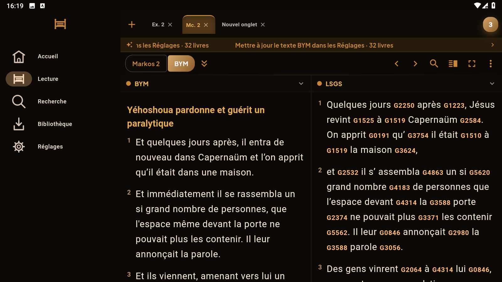
Le même passage dans toutes les versions installées, ou deux textes face à face pour comparer — sur téléphone comme sur tablette.
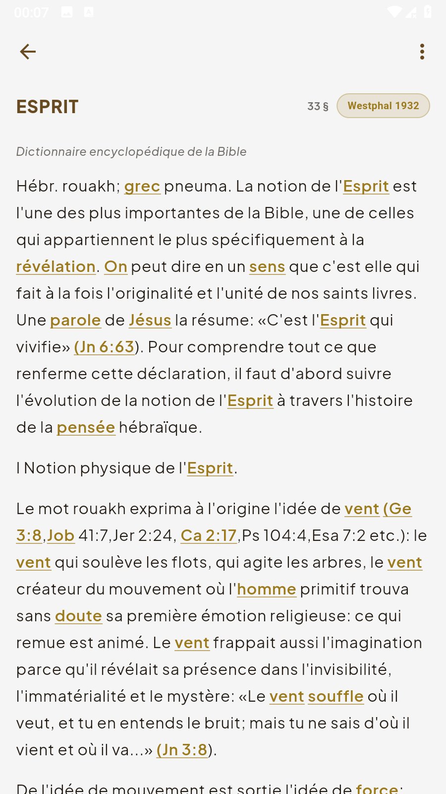
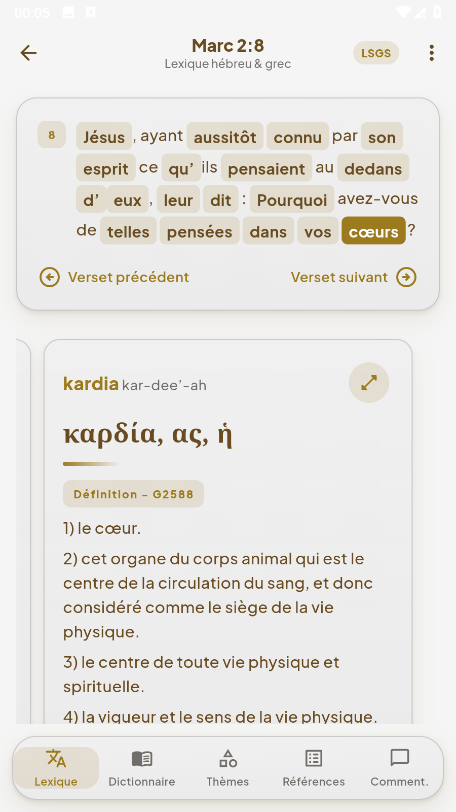
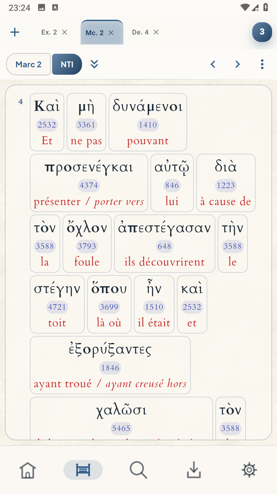
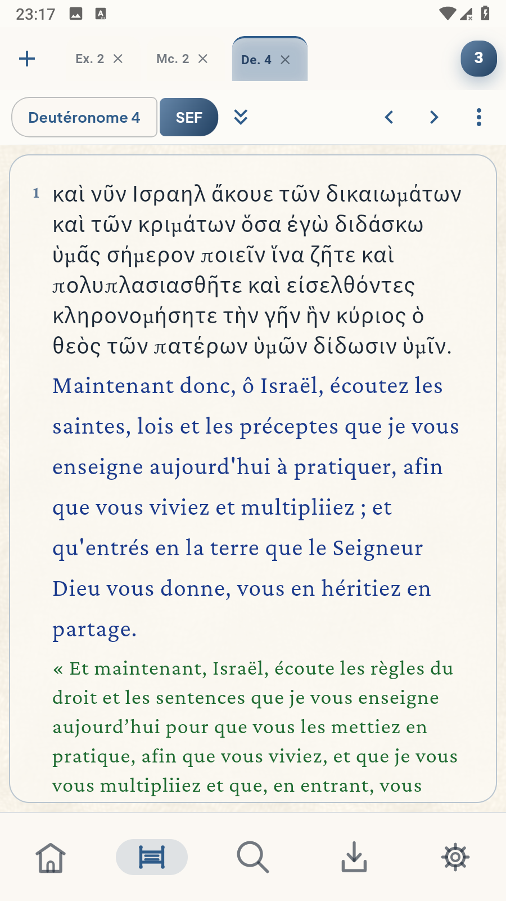
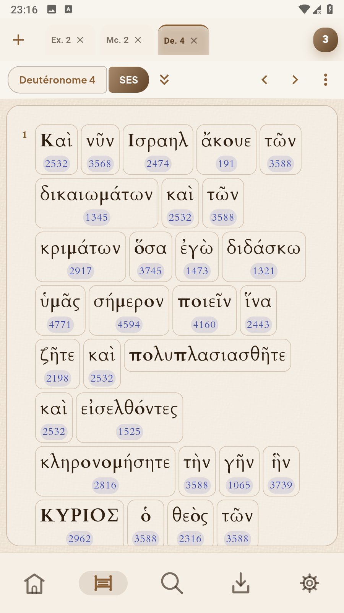
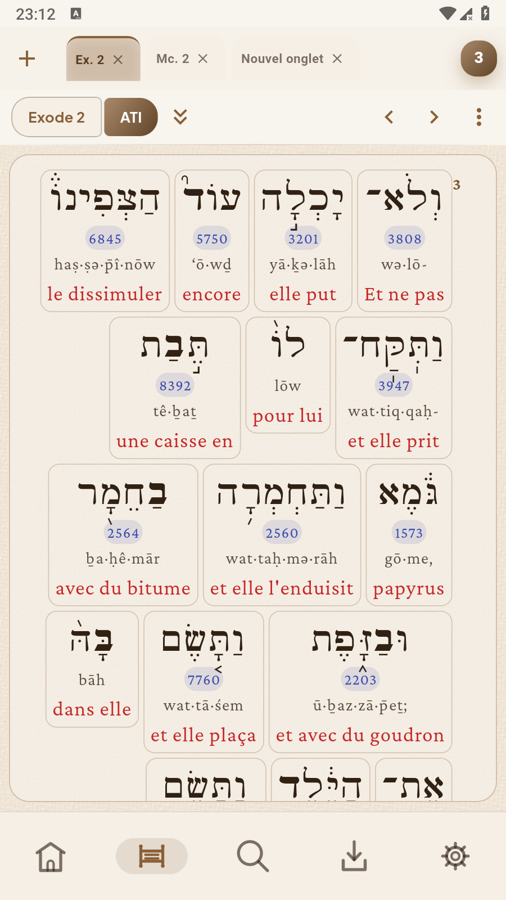
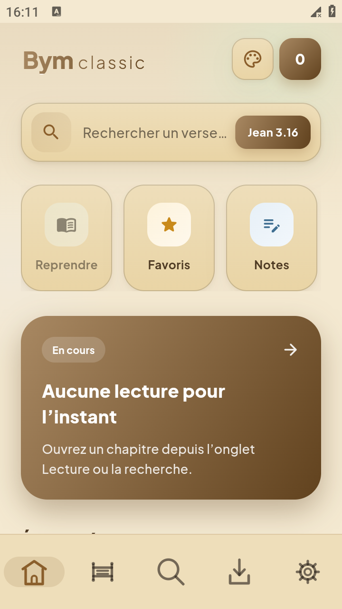

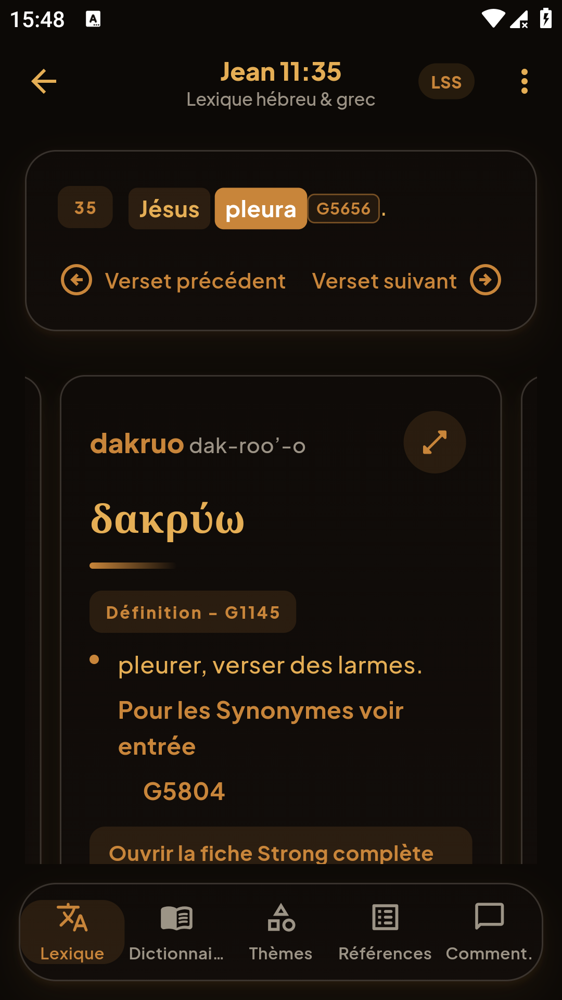

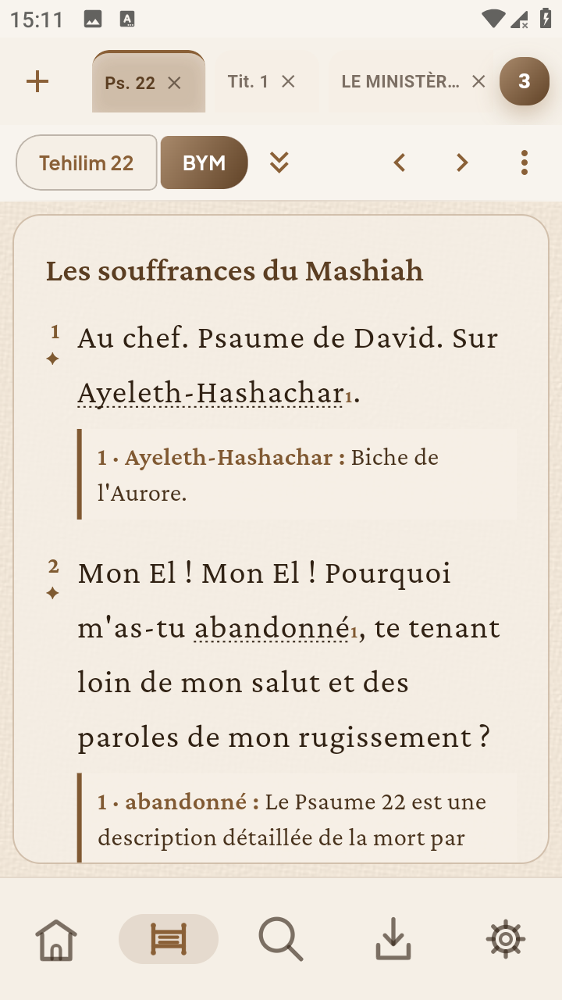
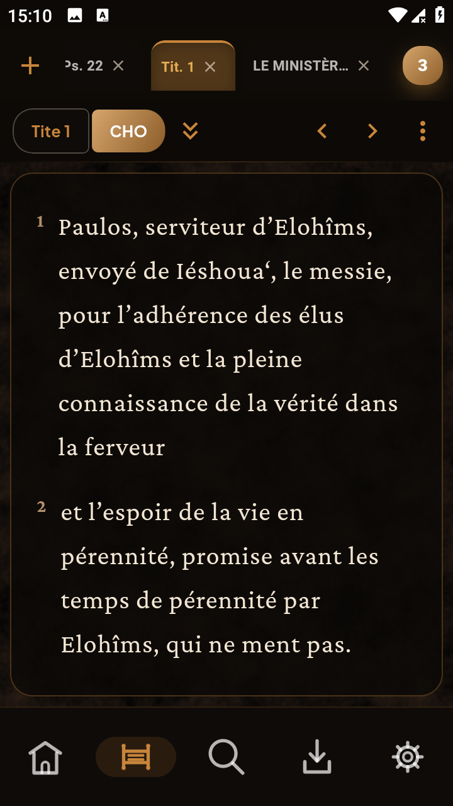

Android bloque par défaut l'installation de sources inconnues — voici les étapes.
Téléchargez le fichier APK via le bouton ci-dessus (ou dans « Versions »).
Quand Chrome vous prévient « fichier potentiellement dangereux », choisissez « Télécharger quand même » (l'APK vient de GitHub Releases).
Ouvrez le fichier téléchargé. Android vous demande d'autoriser l'installation depuis votre navigateur : activez « Autoriser cette source ».
Validez l'installation. BYM apparaît dans vos applications.
L'APK est signé avec la clé personnelle de l'auteur ; les mises à jour écrasent l'ancienne version sans perte de données.
Dernières publications disponibles en téléchargement.
Versions mises à jour automatiquement depuis GitHub Releases.
Une question, une suggestion, une faute repérée dans le texte ? Écris-moi.
L'adresse est assemblée par le navigateur au chargement, pour éviter les robots qui collectent les emails.
Ta lecture, tes notes et tes surlignages restent sur ton appareil : rien n'est envoyé nulle part.
✉ ContactOu passe par GitHub : ouvrir une issue